typora-copy-images-to: media
MySQL数据库
学习目标：
- 理解数据库作用
- 理解数据表、字段、主键含义
- 会使用基本增、删、查、改的SQL语句
- 会用PHP操作数据库
1. 数据库作用
1.1 什么是数据库
- 数据库就是存数据的仓库。它能方便的让程序员保存数据、管理数据和共享数据。
1.2 为什么需要数据库？
我们用一个文本文件、或者excel文件都能把数据存起来，那为什么还要用数据库呢？
- 文件形式管理数据有以下缺点：
1.用文件形式保存数据，不安全，任何人能方便打开和修改删除
2.所有对数据的操作不会留下记录，不知道是谁操作的
3.不方便检索信息
4.其他各种不便，不多枚举
- 数据库系统，就能方便解决上述问题。
- 常见数据库系统有：MySQL、Oracle、SQLServer等
2. MySQL管理界面
2.1 打开界面
- 打开PHPStudy，然后点
MySQL管理器，在弹出的界面中选MySQL-Front 如图：
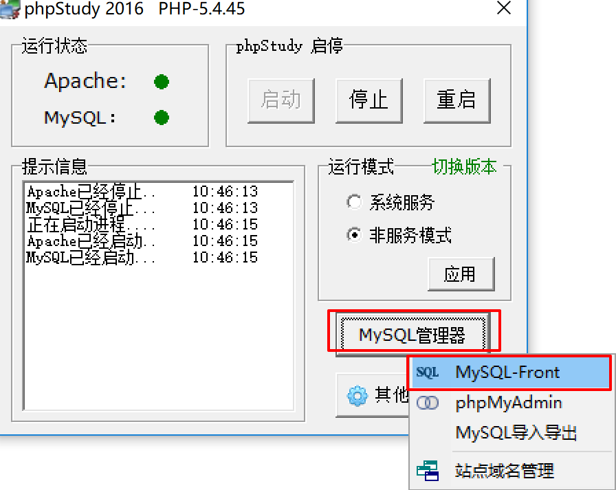
弹出的界面点打开即可
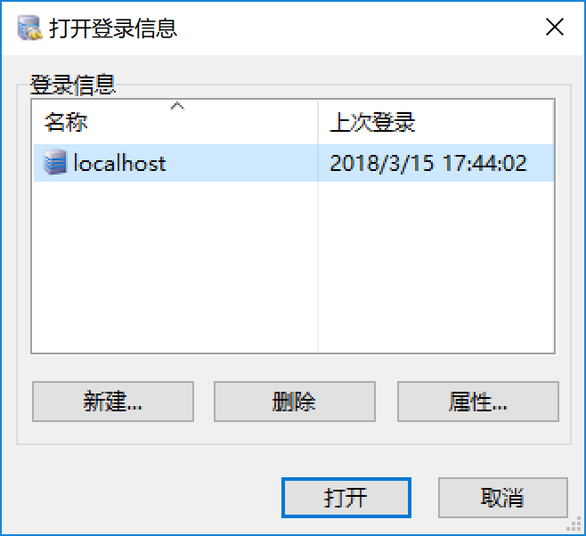
2.2 新建数据库
- 打开后，右键localhost，然后依次选新建、数据库。
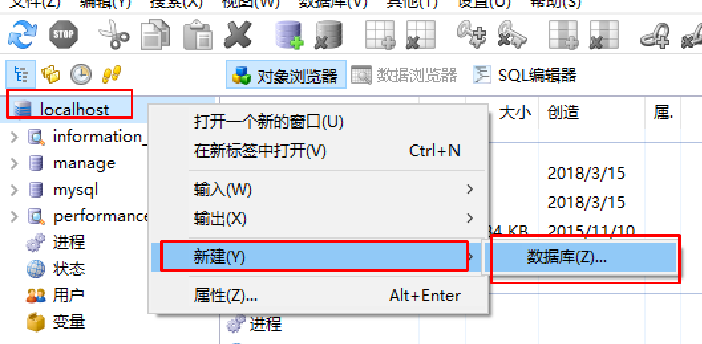
- 输入数据库名字，再点确定就好。注意：请使用英文名字。
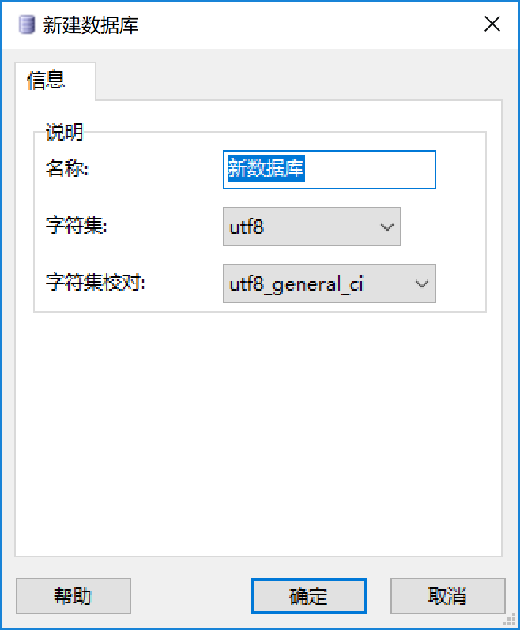
2.3 数据表
2.3.1 建表
为了更好的对数据进行分类，数据库提供了
数据表。方便对这些数据归类。可以把数据表理解为一个表格（如下图）。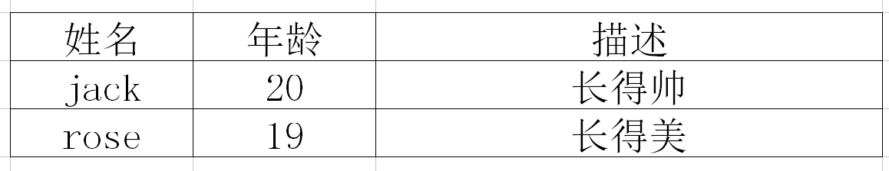
- 建表步骤 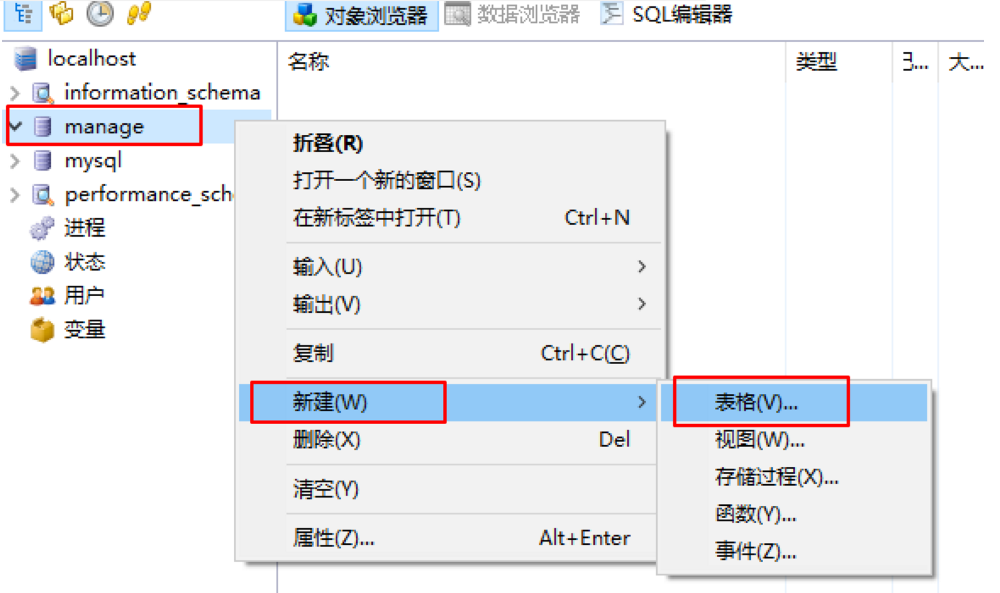
- 此处我们新建一个叫user的数据表，专门用来存每个用户的信息。
2.3.2 字段
- 建好表后，我们看到有一块区域叫
字段 - 字段可以理解为是表格中的列名
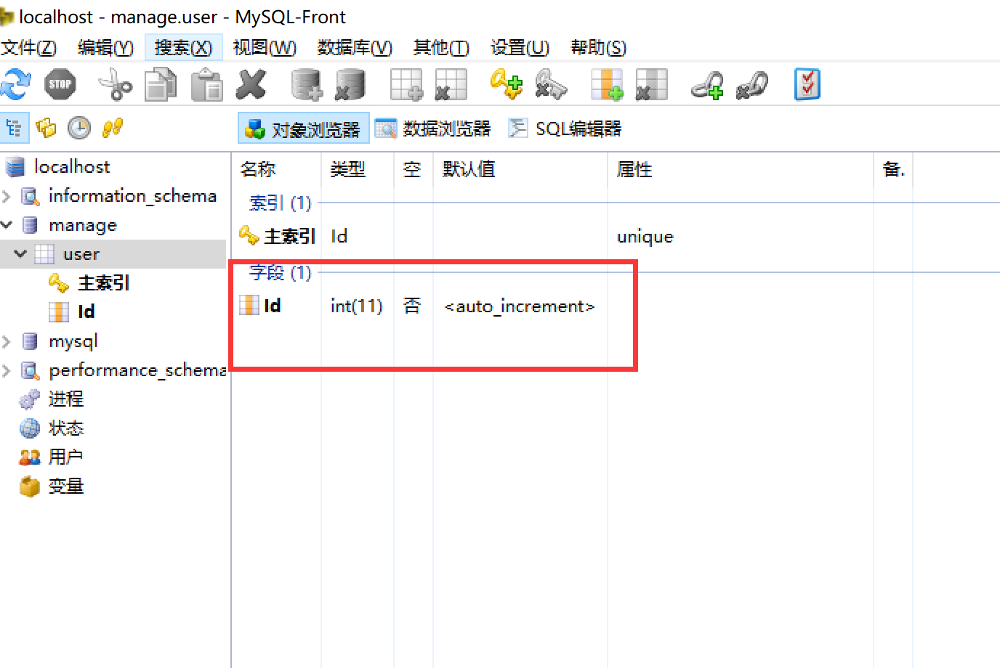
- 添加字段如图：
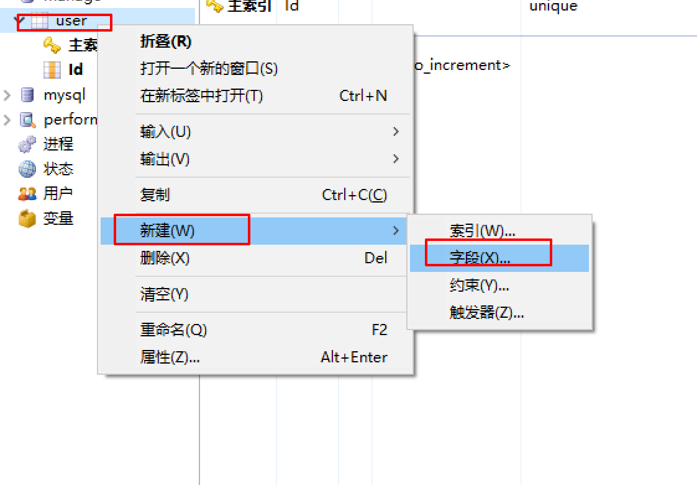
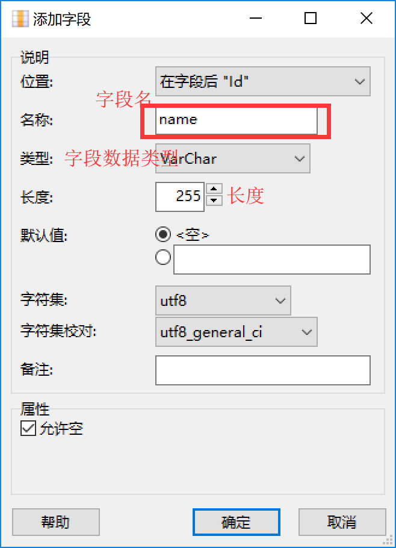
说明：
1. 字段名可以理解为就是列名
2. 类型根据实际情况选择对应类型，例如姓名一般是字符串，在数据库中选择VarChar（数据库中字符串类型）
3. 长度就是说字符串最多允许多少位，长度越小，占用空间越小。（我们用默认长度即可）
- 然后我们再依次加
age和description两个字段。
2.3.3 插入一条数据
- 点中间的
数据浏览器
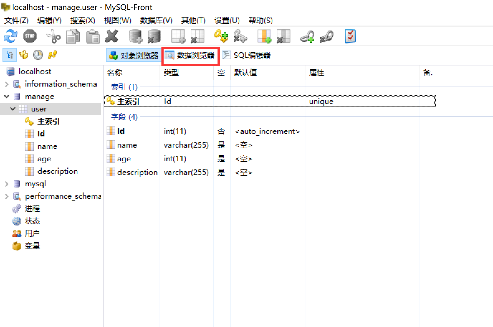
- 下图类似表格的界面就是新增数据的地方。
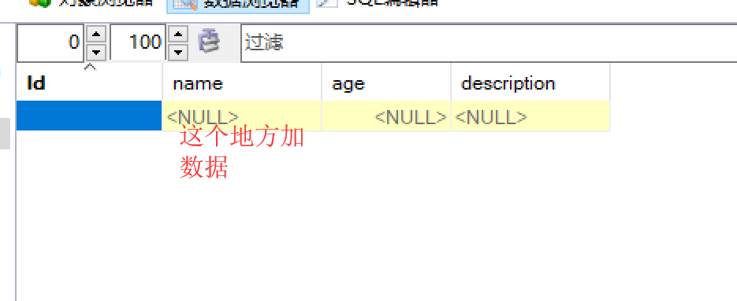
- 我们只在
name，age，description字段下加数据(Id不加，自动生成)
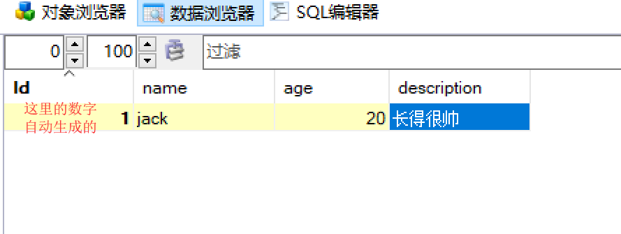
- 插入新纪录：对着任意记录
右键，再点插入新纪录即可
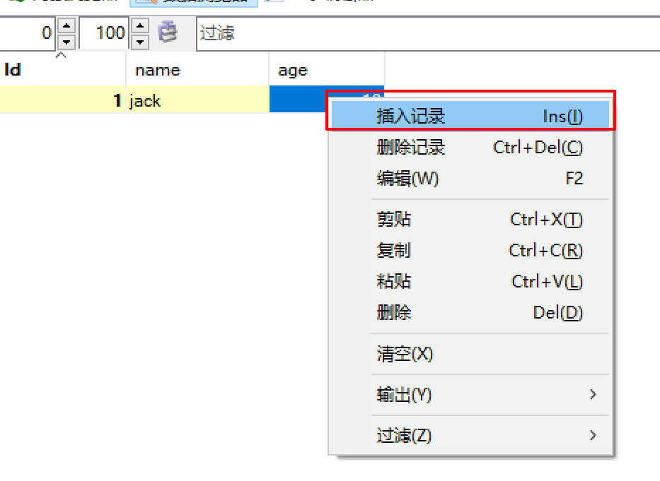
插入完成，如图
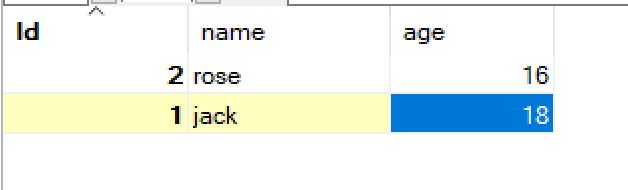
结论：
1. Id这个字段里是自动生成的依次递增的整数。
2. Id字段的作用就是作为某条数据的身份证,用来区分不同的数据
2.3.4 主键/主索引
- 像
Id这样用来区分不同数据的字段，叫主键，或者叫主索引
2.3.5 建表练习
- 新建一个客户表，内容如下： 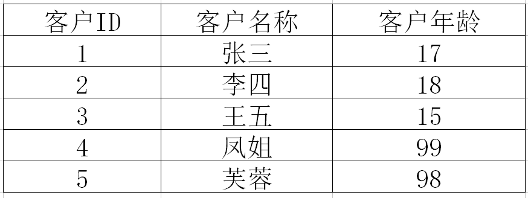
为了方便后面学习时使用，统一起名：
客户表的名称叫：customer
字段客户ID叫：cId
字段客户名称叫：cName
字段年龄叫：cAge
- 新建一个订单表，内容如下：
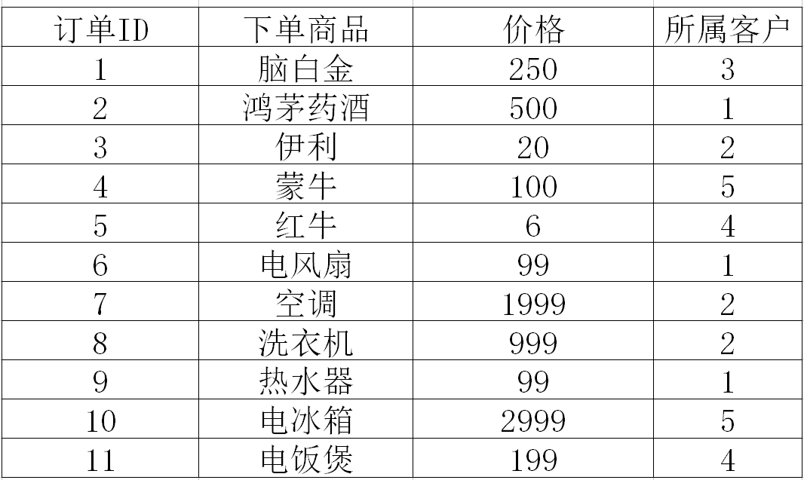
为了方便后面学习时使用，统一起名：
订单表的名称叫：horder
字段订单ID叫：oId
字段下单商品叫：goodsName
字段价格叫：price
所属客户叫：custormId
3. SQL语句
3.1 SQL语句介绍
SQL语言，是一种专门对数据库进行操作的语言。
像我们刚刚通过右键就能插入一条数据，但其实它的本质就是执行一条SQL语句
3.2 增删查改语句
3.2.1 增删查改的意思
- 增：新增记录
- 删：删除记录
- 查：查询记录
- 改：修改记录
3.2.2 insert语句
insert语句对应的是“增”，也即新增数据
- 基本用法：
insert into 表名(字段名) values(值);
- 例：
insert into user(name,age,desc) values('andy',20,'打酱油的');
代表给user表新增一条数据，name的值为andy，age的值为20。
3.2.3 delete语句
delete语句对应的是“删”，也即删除数据
- 用法（慎用）：
delete from 表名;
- 例：
delete from user;
在执行这条语句前我们user表里有三条数据
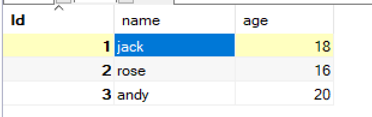
执行完后，我们发现，数据全没了
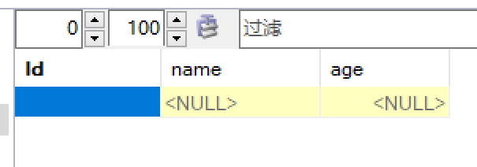
结论：delete语句默认会删除表格中的所有数据，要
慎用
- 按条件删除，用法：（常用）
delete from 表名 where 字段 = 某个值;
- 例：
delete from user where id = 2;
说明：这代表删除user表下，id为2的那条记录
- 也可以按范围删除，例：
delete from user where id <= 3;
说明：这代表删除user表下，id小于或等于3的那些记录
3.2.4 select语句
select语句对应的是“查”，即查询记录
指定查询某些字段
- 用法：
select 字段 from 表名;
- 例：
select name,age from user;
说明：这会查询出user表下所有数据，只会包含name和age字段。如果还有其他字段，结果中不会包含。
查询所有字段
- 用法：
select * from 表名;
- 例：
select * from user;
默认会查询出表中的所有数据，如果想指定条件查询，也可以在后面加
where
- 例：
select * from user where id < 10;
说明：只查询出id小于10的数据，不包括10
3.2.5 update语句
update语句对应的是“改”，也即修改某条数据
- 用法（慎用）：
update 表名 set 字段 = 新值;
- 例：
update user set name = '黑马一哥';
说明：把user表中所有数据的name值改为黑马一哥，注意，此操作是修改所有，所以要小心使用！
- 指定条件修改，例：
update user set name = '黑马一哥' where id = 3;
只修改id为3的这条数据，把name改成黑马一哥
4. PHP操作数据库
4.1 为什么需要
之前我们学的语句都是在MySQL自己的管理界面上操作，但有的时候我们需要在界面上显示一些数据
如下图所示：
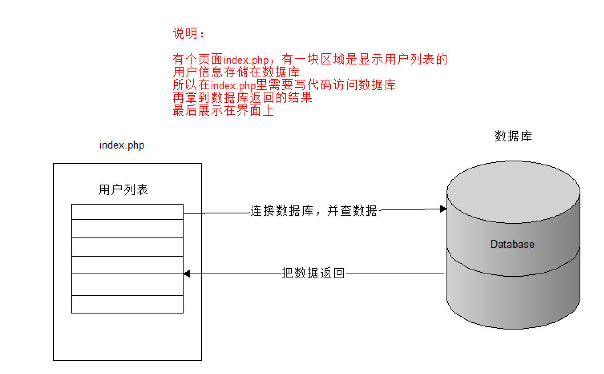
4.2 连接数据库的步骤
思考：把大象装进冰箱需要几步？
1.打开冰箱门
2.把大象塞进去
3.关闭冰箱门
PHP操作数据库，其实也主要分为三大步：
- 建立数据库连接
- 操作数据库（增删改查）
- 关闭数据库连接
4.3 建立数据库连接
- 语法：
mysqli_connect('数据库地址','账号','密码','数据名');
- 参数解释：
参数1：数据库的ip地址
参数2：数据库管理的账号
参数3：数据库管理的密码
参数4：数据库名，因为一个数据库服务器里可能有很多数据库，你需要告诉它连接哪个数据库的
- 例：
$link = mysqli_connect('127.0.0.1','root','root','manage');
使用完此函数后，会有一个返回值，如果返回值为false代表连接失败
如果返回值不为false，那么会打印一个类似下图的数据
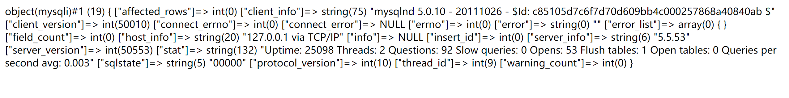这个返回值我们一般叫 连接通道，这个 连接通道 里面的内容是什么我们不需要关心，只需要知道，连接通道里包含了本次连接的各种信息，只要不是false就代表数据库连接成功。
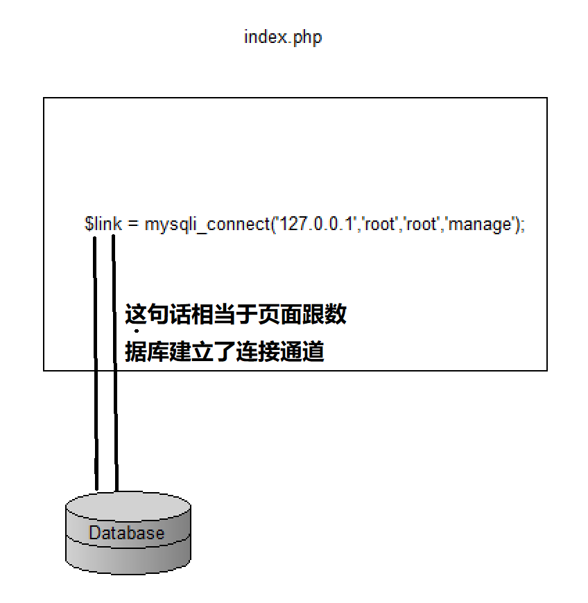
4.4 操作数据库
- 语法：
mysqli_query(连接通道，SQL语句);
4.4.1 查询数据
- 例：
$result = mysqli_query($link,"select * from user");
说明：
这句话执行完后会得到一个结果，结果包含了查询得到的数据，我们用一个变量
$result接收但是，这个返回值我们不能直接拿来用，还需要用一个
解析函数来把数据解析出来
- 用法：
mysqli_fetch_all(查询结果,MYSQLI_ASSOC);
- 例：
$users = mysqli_fetch_all($result,MYSQLI_ASSOC);
说明：
- 参数1：我们传之前用
mysqli_query函数查询到的结果 - 参数2：固定写
MYSQLI_ASSOC，如果记不住，就写1。
函数执行后，会把结果转成一个关联型数组。这样，我们要的数据就比较明确了。
注：参数2如果不传
MYSQLI_ASSOC，得到的会是一个普通数组，那样我们取数据时只能根据下标来取。
4.4.2 增、删、改数据
增、删、改数据，也是用
mysqli_query这个函数操作。只不过把SQL语句换成对应的语句
- 增加：
mysqli_query($link,'insert into user(name,age,desc) values("新人",16,"新增加的一条数据")');
- 删除：
mysqli_query($link,'delete from user where id=2');
- 修改：
mysqli_query($link,'update user set name="修改",age=18,desc="我被改了" where id=2');
因为增、删、改不是为了获取结果，所以此时
mysqli_query的返回值不再会是一堆数据，而是获得受影响的行数，我们根据受影响的行数是否大于0，就可以知道是否操作成功
- 用法：
4.5 关闭数据库连接
无论你是做增删查改中的哪一种，请记得最后一定要关闭数据库连接！
- 用法：
mysqli_close($link);
注意：请记得一定要关闭数据库连接，否则会占用服务器资源。
5. PHP操作数据库步骤的封装
无论做增、删还是改，代码都是一样的，唯一不同的是SQL语句不同。
为了以后用起来方便和节省代码量，我们可以把增、删、改的代码封装成函数。
5.1 增、删、改封装
- 代码如下：
function my_Excute($sql){
// 连接数据库
$link = mysqli_connect('127.0.0.1', 'root', 'root', 'study');
// 执行sql语句
$rows = mysqli_query($link, $sql); //返回值就是受影响的行数
// 关闭连接
mysqli_close($link);
// 返回行数
return $rowNum;
}
严格来讲，数据库的IP、用户名、密码也该当参数传进来，但是因为我们在学习阶段，所以此处我们就写死本地IP和用户密码。
5.2 查询数据的封装
function my_Query($sql){
// 连接数据库
$link = mysqli_connect('127.0.0.1', 'root', 'root', 'study');
// 执行sql语句
$result = mysqli_query($link, $sql);
// 解析数据
$data = mysqli_fetch_all($result,1);
// 关闭连接
mysqli_close($link);
// 返回结果
return $data;
}
6. 综合案例 --- 人员管理系统
- 效果如图：
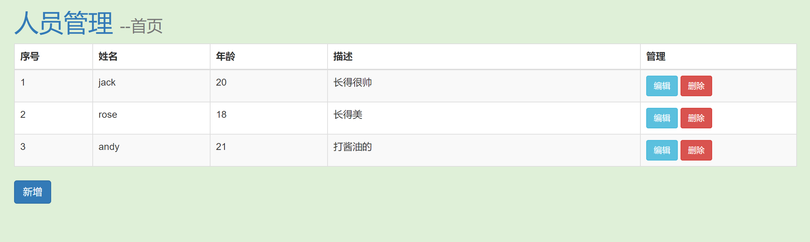
6.1 需求说明：
用户打开首页时，会从数据库中查询到
user表下的最新全部数据并显示在界面上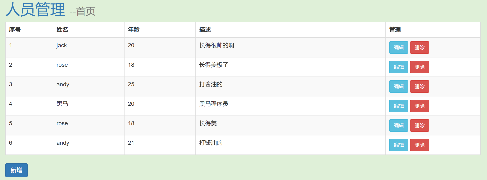
当用户点击
新增时，会跳转到新增页面，如图
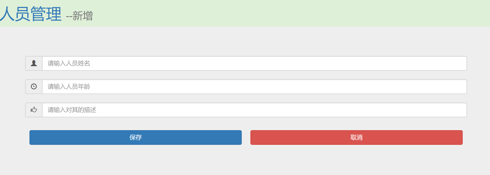
- 当用户点击某行的
编辑时，会显示编辑页面，并把当前行的数据带入，如图
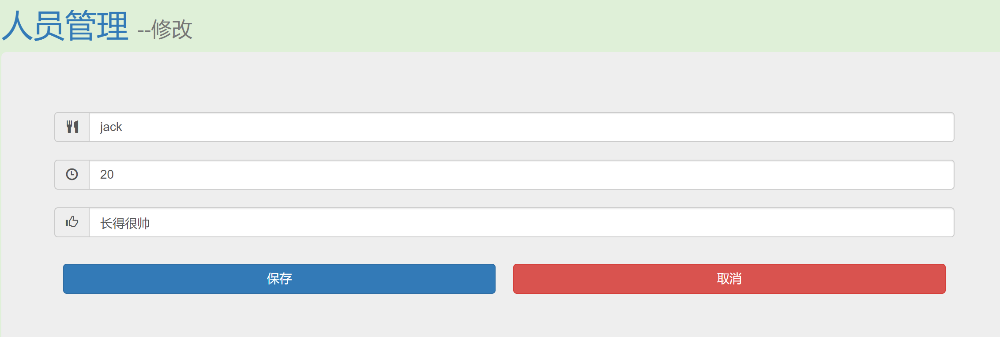
- 当用户点击
删除，则对应那行数据要删掉
6.2 首页数据展示
html和css部分不是重点，我们直接用写好的页面结构即可。
初始模板代码：点我下载
- 让
index.php展示数据，代码如下：
<tbody>
<!-- 此处写生成表格的代码 -->
<?php
//建立数据库连接
$link = mysqli_connect('127.0.0.1','root','root','manage');
//查询数据库
$result = mysqli_query($link,"select *from user");
//解析成数组
$data = mysqli_fetch_all($result,1);
//关闭数据库连接
mysqli_close($link);
//数据有多少个，就循环多少次来创建tr
for($i = 0; $i < count($data); $i++):
?>
<tr>
<td><?php echo $data[$i]['Id']; ?></td>
<td><?php echo $data[$i]['name']; ?></td>
<td><?php echo $data[$i]['age']; ?></td>
<td><?php echo $data[$i]['description']; ?></td>
<td>
<a href='#' class="btn btn-sm btn-info">编辑</a>
<a href='#' class="btn btn-sm btn-danger">删除</a>
</td>
</tr>
<?php endfor;?>
</tbody>
6.2 新增功能
思路：
1. insert.html的表单提交到doAdd.php文件，所以我们需要创建这个文件 2. doAdd.php里，拿到提交过来的用户名、年龄、描述等信息 3. 用PHP操作数据库，把这些信息当做字段的值新增 4. 新增完毕跳转回首页看效果
doAdd.php代码如下：
<?php
//1. 获得提交的数据
$name = $_POST['userName'];
$age = $_POST['userAge'];
$desc = $_POST['userDesc'];
//2. 建立数据库连接
$link = mysqli_connect('127.0.0.1','root','root','manage');
//3. 准备SQL语句
$sql = "insert into user(name,age,description) values('$name','$age','$desc')";
//4. 执行新增语句
$rows = mysqli_query($link,$sql);
//5. 关闭数据库连接
mysqli_close($link);
//6. 跳转回首页
header('location:index.php');
?>
注意：写SQL语句时，values部分每个值都要用
''包起来，不然插入数据库会失败
6.3 编辑功能
需求：
当点击index.php这个首页上的 编辑 按钮时，会跳转到修改界面，并且把被点击的那行数据带过去
- 来到
index.php，找到编辑这个a标签，修改它的href属性，代码如下：
<a href="./update.php?id=<?php echo $data[$i]['Id']; ?>" class="btn btn-sm btn-info">编辑</a>
说明：谁被点击，就会跳转到update.php文件，并把被点击的那条数据id传过去，因为为了方便update.php界面可以展示出这条被点击的数据。
- 修改update.php文件，核心代码如下：
<!-- 这里先根据id查询出对应的数据 -->
<?php
//获取传递过来的id
$id = $_GET['id'];
//打开数据库连接
$link = mysqli_connect('127.0.0.1','root','root','manage');
//准备SQL语句
$sql = "select * from user where id = '$id'";
//执行查询
$result = mysqli_query($link,$sql);
//解析结果
$data = mysqli_fetch_all($result,1);
?>
<!-- 后面还有段把查到数据显示到html元素的代码，因代码太多，讲义这里省略，课堂讲 -->
经过上面步骤后，发现当用户点保存后会跳转到doUpdate.php进行处理
- 新建doUpdate.php，核心代码如下：
<?php
//获取提交过来的数据
$id = $_POST['id'];
$name = $_POST['userName'];
$age = $_POST['userAge'];
$desc = $_POST['userDesc'];
//打开数据库连接
$link = mysqli_connect('127.0.0.1','root','root','manage');
//准备SQL语句
$sql = "update user set name='$name',age='$age',description='$desc' where id='$id'";
//执行语句
$rows = $result = mysqli_query($link,$sql);
//关闭连接
mysqli_close($link);
//跳转回首页
header('location:index.php');
?>
6.4 删除功能
需求：点击删除后，把删除所在那行的数据删掉
- 在首页修改
删除这个a标签的href属性如下：
<a href="./delete.php?deleteId=<?php echo $data[$i]['Id']; ?>" class="btn btn-sm btn-danger">删除</a>
- 新建delete.php文件，核心代码如下：
<?php
//获得传递过来的id
$id = $_GET['deleteId'];
//建立数据库连接
$link = mysqli_connect('127.0.0.1','root','root','manage');
//准备SQL语句
$sql = "delete from user where id ='$id'";
//执行语句
$rows = mysqli_query($link,$sql);
//关闭连接
mysqli_close($link);
//跳转回首页
header('location:index.php');
?>
7. 总结前后端开发分工
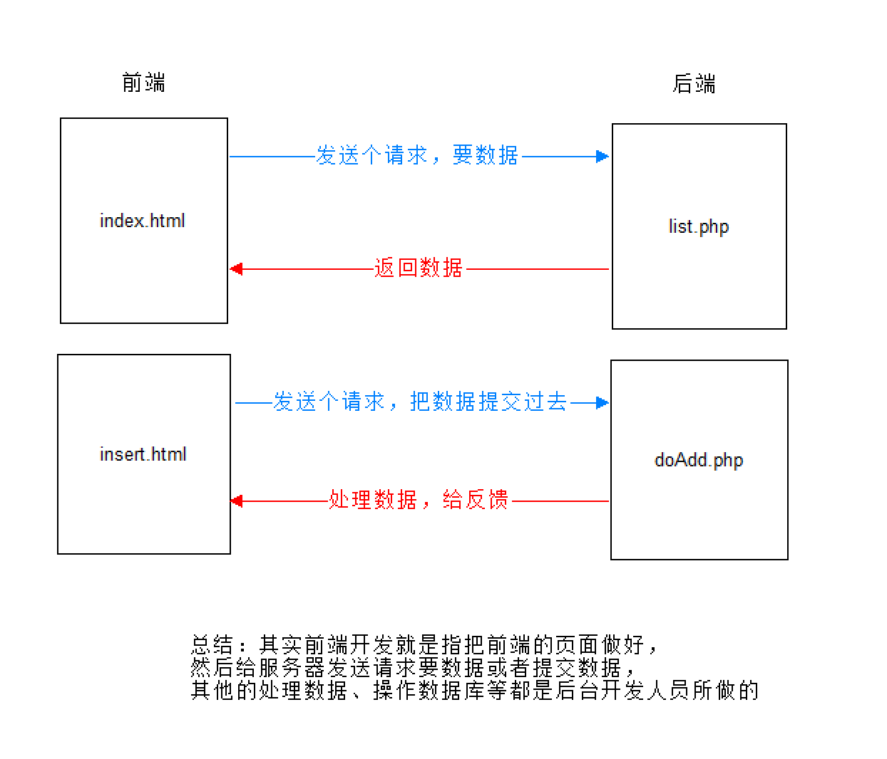
如图：左边部分为前端开发人员所做，右边部分为后台人员所做。
可以发现：前端开发主要是做用户直观看到的界面部分，以及跟服务器发请求（请求可以是要数据，也可以是提交数据）。而后端开发主要是处理数据、操作数据库等。
8. 扩展知识
8.1 通配符-->模糊查询
%为通配符，一般搭配like关键字使用。
8.1.1 以什么开头
- 查询所有
字段以关键字开头的数据
select * from 表名 where 字段 like '关键字%';
- 例：
-- 查询user表中name以j开头的所有数据
select *from user where name like 'j%';
8.1.2 以什么结尾
- 查询所有
字段以关键字结尾的数据
select * from 表名 where 字段 like '%关键字'';
- 例：
-- 查询user表中name以y结尾的所有数据
select *from user where name like '%y';
8.1.3 包含什么内容
- 查询所有
字段包含关键字的数据
select * from 表名 where 字段 like '%关键字%';
- 例:
-- 查询user表中name中包含o的所有数据
select *from user where name like '%o%';
8.2 并且条件
- 使用and关键字，例：
-- 查询user表中name为jack，并且age为20的数据
select *from user where name='jack' and age='20'
8.3 或者条件
- 使用or关键字，例
-- 找到user表中age小于10，或者age大于100的数据
select *from user where age < 10 or age > 100;
8.4 连表查询
- 很多时候同一个页面的数据是从多张表取出
- 例如：如果想展示所有用户的信息以及它下的订单商品，就需要找到两张表的数据联合起来。
- 如图：
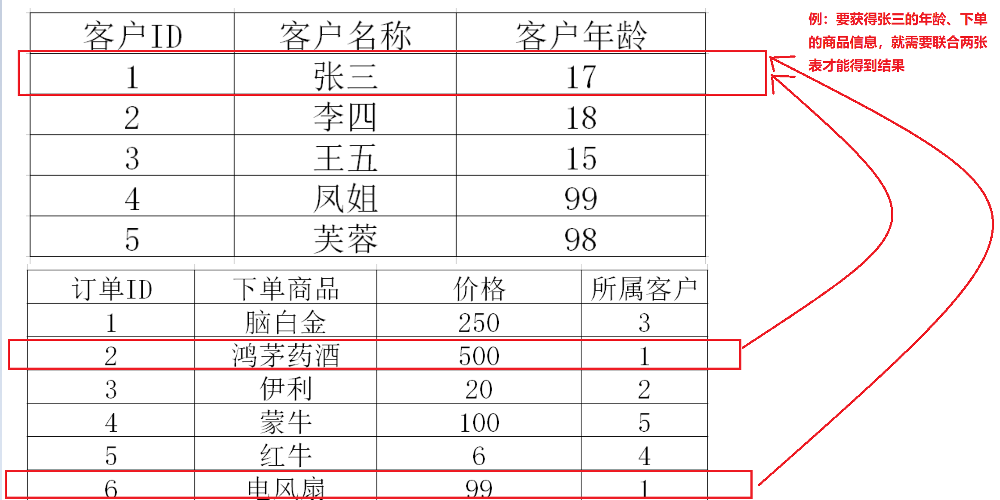
我们首先会想到，把两张表一起查，但这样做不会得到正确结果，例：
select *from customer ,horder;
- 结果如图：
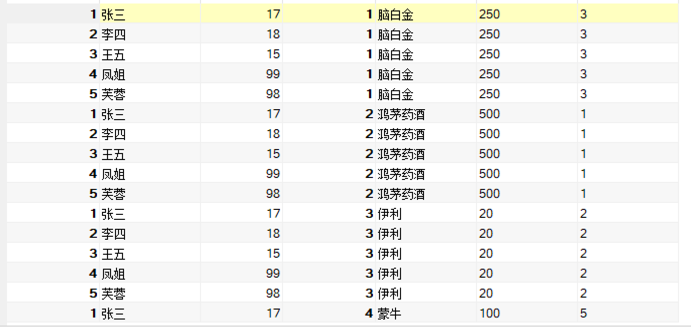
这相当于把两表的所有记录都联了一次（这叫交叉连接），如图说明
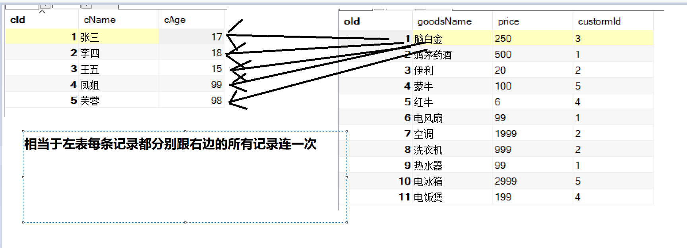
- 如果要起到左表张三，只跟右表属于张三的记录连接起来，我们需要用
inner join ... on关键字 - 语法：
select 字段 from 表1 inner join 表2 on 对应关系
- 例:
-- 找到customer和horder双表结合的结果，只把customer中的cId字段和horder表中custormId字段相等的记录组合在一起
select *from customer inner join horder on customer.cId = horder.custormId
- 如果觉得表名太长，可以给表名起别名，例：
select *from customer c inner join horder h on c.cId = h.custormId
8.5 分页查询
- 有时候某张表里有大量数据，而我们只需要查中间的某几条，因此可以用下面的分页查询语句
select * from 表名 limit 第几条开始,查几条;
- 例：
-- 查询person表里第10条到第20条数据（一共查出来10条）
select * from person limit 10,10;
思考：为什么不直接用id>= 10 and id<20的写法
8.6 建表SQL语句
CREATE TABLE 表名称
(
列名称1 数据类型,
列名称2 数据类型,
列名称3 数据类型,
....
)
注意：不要记，知道这是一条建表的语句即可。真正要建表直接用管理工具鼠标点击创建即可。
9. 延伸阅读
程序员的SQL金典 （按ctrl+鼠标左键）